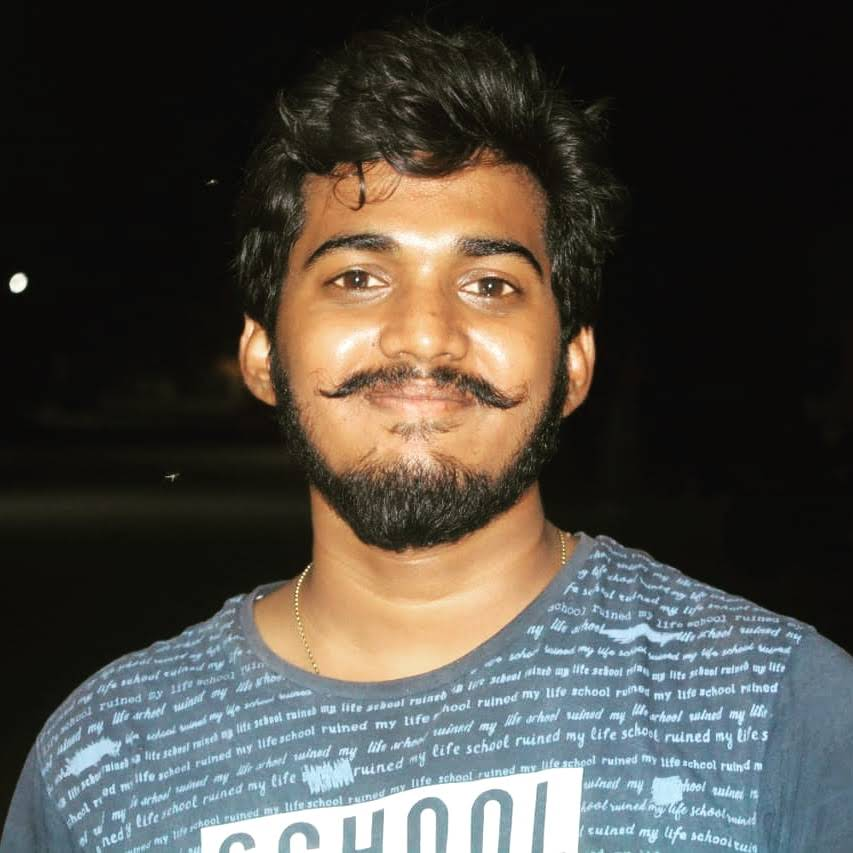
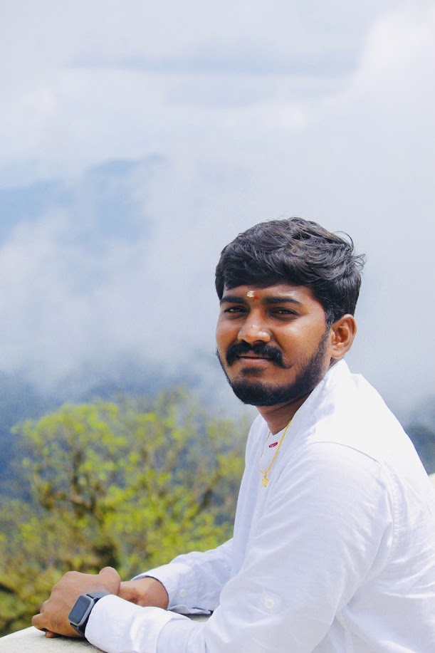
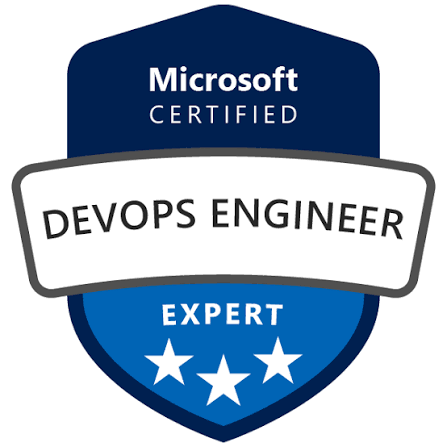
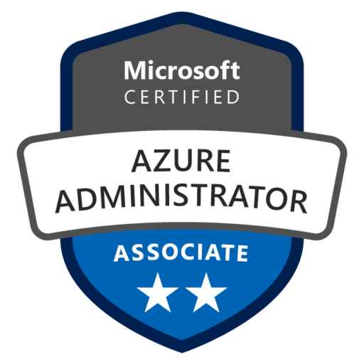
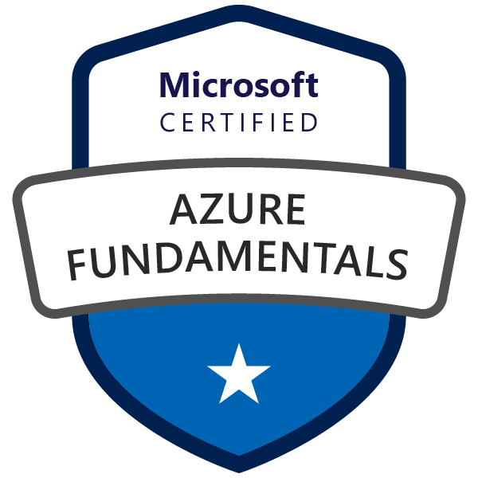

AI & agentic AI
Agents that reason over operational context and coordinate tools across multi-step tasks.

AI ENGINEERING · AZURE · GCP
AI & Site Reliability Engineer
Senior CloudOps Engineer
BUILT FOR THE REAL WORLD
Resilient cloud infrastructure.
Agentic AI for intelligent operations.
Automation that turns operational data into action.

01 / THE PERSON BEHIND THE PLATFORM
I build AI-powered cloud and infrastructure systems that combine SRE, CloudOps, observability, automation, and agentic AI.
From agentic AI, LangGraph, and LangChain to Azure AI Foundry, Azure OpenAI, and Google’s Gemini and Vertex AI, I engineer AI systems that work with real-world infrastructure—monitoring it, reasoning over it, automating operations, and driving self-healing workflows.
My foundation is 5+ years in production cloud operations: Microsoft Teams services through Wipro and safety and infrastructure operations at Octave (Hexagon R&D India). I bring that operational mindset to AI: useful context, reliable execution, and measurable reductions in toil.
Service uptime
Lower MTTR for recurring issues
Less L1 triage effort
Manual regression saved monthly
02 / EXPERTISE
AI and agentic systems first.
Azure depth. Google Cloud breadth.
Agents that reason over operational context and coordinate tools across multi-step tasks.
Composable LLM applications and stateful agent workflows for investigation and automation.
Infrastructure-aware AI workflows backed by enterprise knowledge, telemetry, and callable tools.
Production operations, secure service connectivity, and infrastructure maintenance.
AI prototyping and model-powered applications across Google’s developer and cloud ecosystem.
Runbooks, incident history, and operational knowledge connected to context-aware responses.
Model ecosystems for reasoning, tool use, coding, and agent workflows, alongside local inference and evaluation.
Monitoring signals connected to diagnosis, runbook recommendations, and controlled remediation.
Agent-assisted development for building, iterating, and automating engineering workflows.
Repeatable deployments and controlled upgrades with automated health validation.
Actionable signals and recovery workflows tied to service objectives and incident response.
Version-controlled infrastructure and reproducible environments with traceable changes.
Release pipelines with quality gates and controlled rollout patterns.
Operational tooling, recovery loops, and disaster recovery readiness.
AI ENGINEERING / APPLIED TO OPERATIONS
Built around real telemetry,
operational context, and actionable tools.
I connect language models to the systems engineers use every day—so AI can help explain an incident, retrieve the right runbook, and support the next action.
My production experience brings Azure AI Foundry, Azure OpenAI, Azure AI Search, and Python automation into infrastructure diagnostics. My broader AI stack includes Google Gemini, Google AI Studio, Vertex AI, LangGraph, and LangChain, connecting model capabilities to the operational problems I know firsthand.
Azure Monitor alerts, AKS logs, and infrastructure telemetry.
Relevant runbooks and incident knowledge through embeddings and search.
Multi-step reasoning and Python function calls for diagnostics and remediation workflows.
Incident summaries, corrective-action recommendations, and draft runbook entries.
60%less L1 triage effort
4 hourssaved on documentation per major incident
~35%less repetitive coding effort with Copilot
Alongside implementation, I evaluate prompts, model configurations, and agent workflows for response quality, reliability, and operational safety.
PERSONAL PROJECT / APPLIED AI
Manual operational effort saved monthly
A personal project focused on turning infrastructure telemetry into diagnosis, actionable recommendations, and self-healing workflows.
Recurring alerts, fragmented logs, and manual runbook execution take engineers away from deeper reliability work.
Connect monitoring signals to a retrieval-backed agent workflow: collect context, reason over symptoms, propose a remediation, and validate service health after an approved action.
Gemini or Azure OpenAI for reasoning; LangGraph for workflow orchestration; LangChain for retrieval and tool integration; Python and FastAPI for operational tools; Kubernetes and Azure Monitor for infrastructure signals.
03 / SELECTED WORK
Selected initiatives from
production platform operations.
Agentic workflows connect Azure Monitor telemetry, AKS logs, and operational knowledge to speed up investigation and remediation.
Built tool-calling agents with Python and Azure OpenAI; used Azure AI Search and embeddings to retrieve runbook context. Automated incident summaries and runbook drafts, saving 4 hours of documentation per major incident. Evaluated prompts and agent workflows for response quality and operational safety.
An end-to-end observability platform for Kubernetes, with consistent monitoring across development, staging, and production.
Deployed containerized monitoring with Docker and Helm, reducing blind-spot incidents by 35%. Improved alert coverage by 30%, supporting 99.95% availability targets. Designed monitoring continuity for active-active and active-passive disaster recovery.
A configuration-driven test framework automates monitoring, alerting, and health checks across products and environments.
Automated 60+ regression scenarios, reducing validation effort by approximately 50%. Dynamic tests draw on Variable Groups and live Kubernetes configurations across 4 products. Automated maintenance gates cover clusters running 200+ pods and reduced upgrade-related incidents by 60%.
CI/CD and deployment engineering for Microsoft Teams services across five environment tiers, with controlled rollout strategies.
Reduced pipeline maintenance effort by 35%. Implemented blue-green, canary, and feature-flag deployments, reducing incident risk by 45% against direct rollouts. Infrastructure automation reduced provisioning from 3 days to 4 hours; deployment audit coverage improved from 60% to 100%.
04 / EXPERIENCE
MAY 2024 — PRESENT
Hyderabad, India
Safety & Infrastructure Operations
NOV 2020 — MAY 2024
Hyderabad, India
Microsoft Teams Services
05 / CREDENTIALS

MICROSOFT CERTIFIED
MICROSOFT CERTIFIED
MICROSOFT CERTIFIEDEDUCATION / 2017 — 2020
Institution of Aeronautical Engineering, JNTU, Hyderabad
REACH OUT · COLLABORATE · WORK TOGETHER
Have a project in mind, want to collaborate, or simply want to reach out? I’d love to hear from you.
Let’s build AI you can depend on.